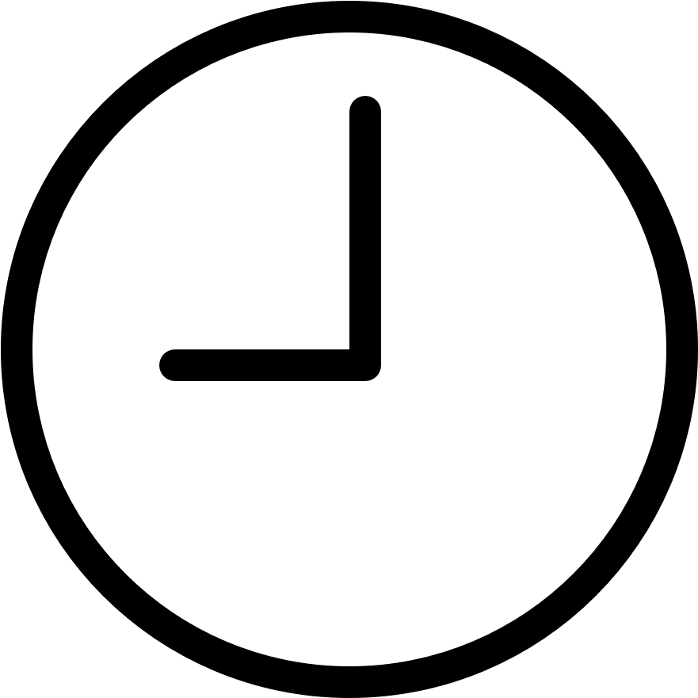
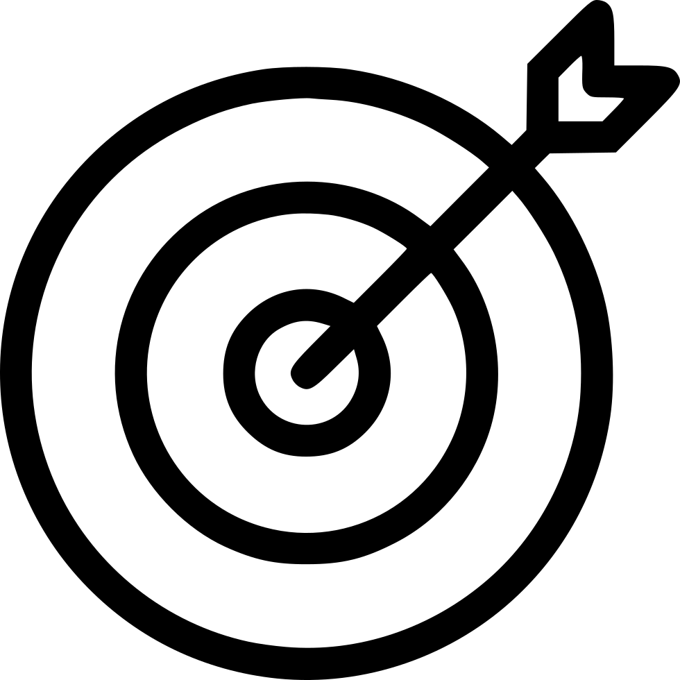
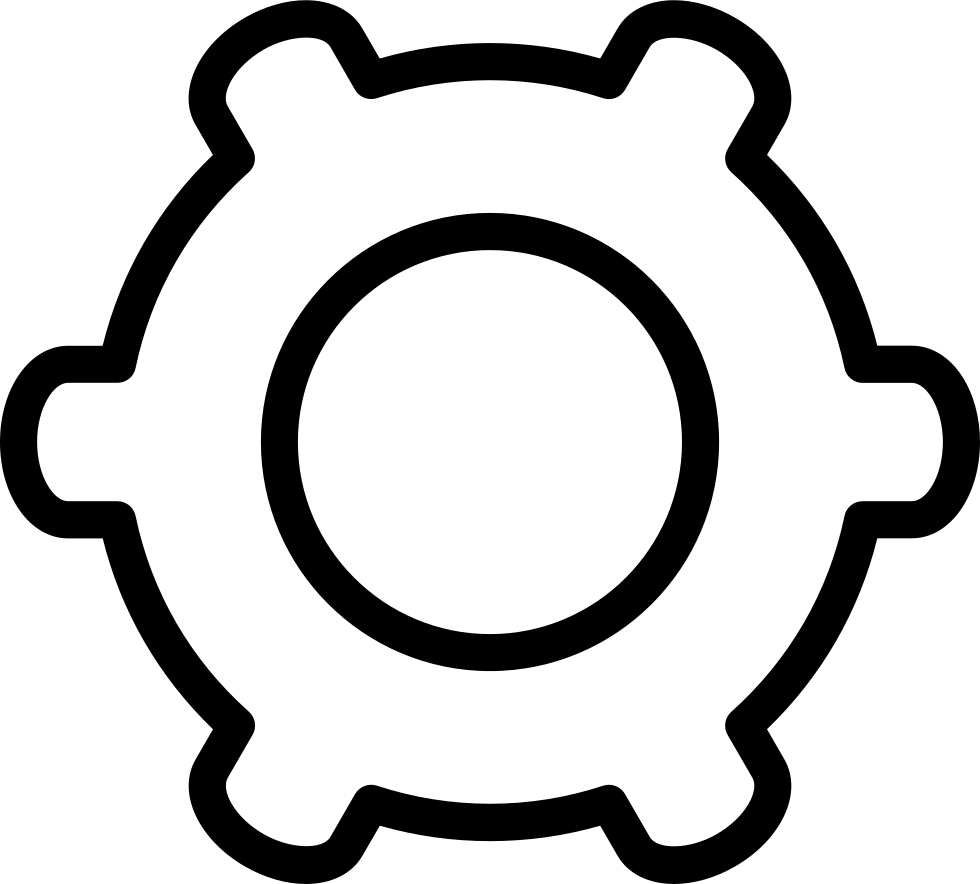
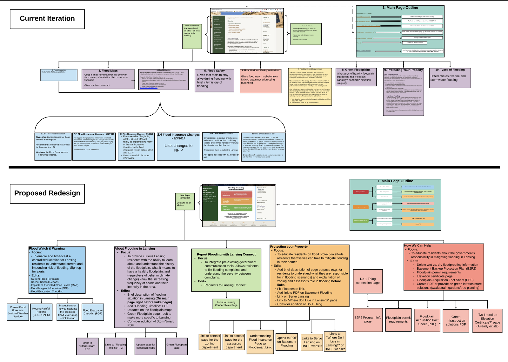
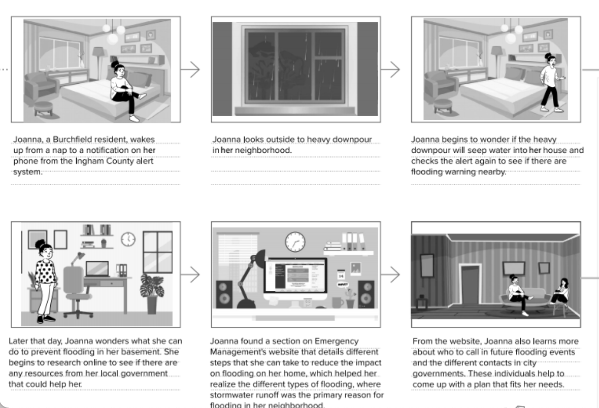
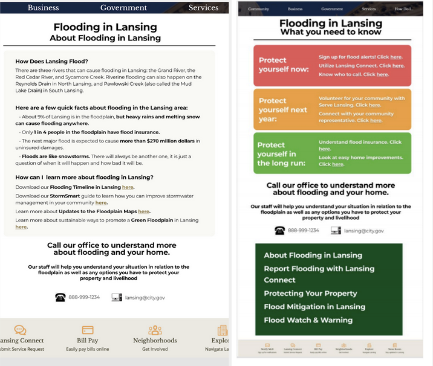
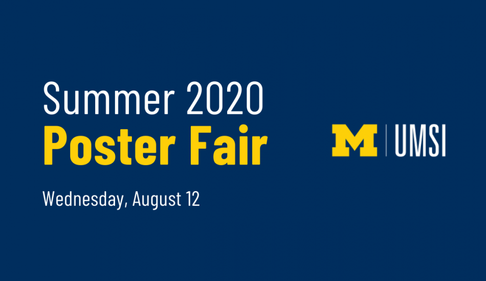

Lansing Office of Emergency Management
Project Details

Timeline
Four months with four UMSI grad students.
Product Goals
The OEM's goal was to connect residents with emergency preparedness resources and support.

Project Goals
Assess user needs to better connect with public services.

Systems Used
Figma, Jira, Lucidcharts.
Process |
|||
I. Needs Assessment |
II. Usability Evaluation |
||
Interviews & Mapping |
Survey & Storyboarding |
Prototyping & Iteration |
|
Without access to Burchfield residents due to COVID, we interviewed Lansing residents alongside subject-matter experts. We then produced a site map, affinity wall, and process flow. |
We disseminated a survey through newsletters and social media. From these results, we began to storyboard for intersecting a potential solution. |
From our storyboarding processes, it was determined that our client lacked a centralized approach to flooding awareness and reporting that was both digestible and user-friendly in nature. Our approach, beginning with sketches and developing into a low-fidelity prototype, prioritized actionable items, relationship building, and succinct information delivery. |
|
Interviews & Mapping
Process
- 11 interviews with experts and residents
- Creation of an interaction map, process flow, and affinity wall
Findings
The interview process between two distinct groups revealed discrepancies
on service responsibilities that were a clear source of tension.
Lessons Learned
The coordination of process flows (informed by GIS data),
interaction maps, and affinity walls was crucial in helping us understand macro and micro
perspectives on the problem.

Surveys & Storyboarding
Process
- Crafted survey on Qualtrics
- Disseminated survey through newsletter
- Received 73 responses and created a storyboard
Findings
The interview process between two distinct groups
revealed discrepancies on service responsibilities that were a clear source of tension.
Lessons Learned
Surveys are critical to the research and design process,
yet can yield inaccurate and misleading results with the wrong questions.

Prototyping & Iteration
Process
- Mobile-centric sketches
- Low-fidelity prototype
- Iteration with client feedback and finalization
Findings
Beyond our focus on actionable items, relationship building, and succinct information
delivery, we also wanted to focus on mobile delivery for its potential in emergency situations,
as well as connecting the website to other services, like Lansing’s hazard reporting tool, Connect.
Lessons Learned
From this phase of the project, I learned the importance of concise information delivery and how
to prioritize the delivery of gathered findings.

Outcome
With the completion of the final prototype, out team was invited to
present to both our client and virtually gathered participants. My first virtual conference was
certainly strange, but I felt excited knowing that the OEM had a more concise template through
which it could connect with residents.
You can find more of our team's final deliverables here.
